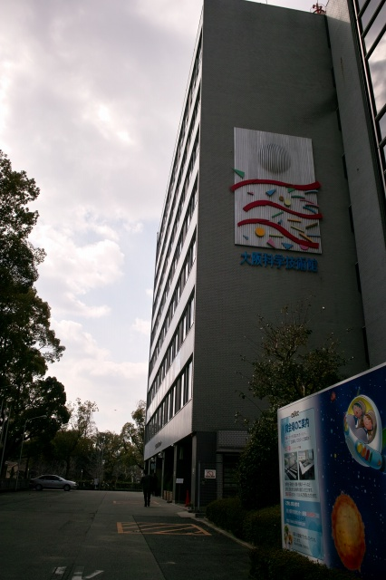
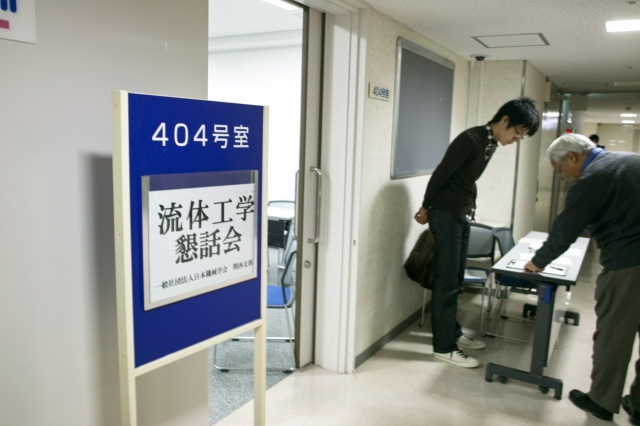
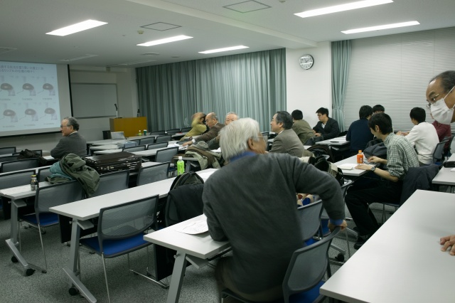
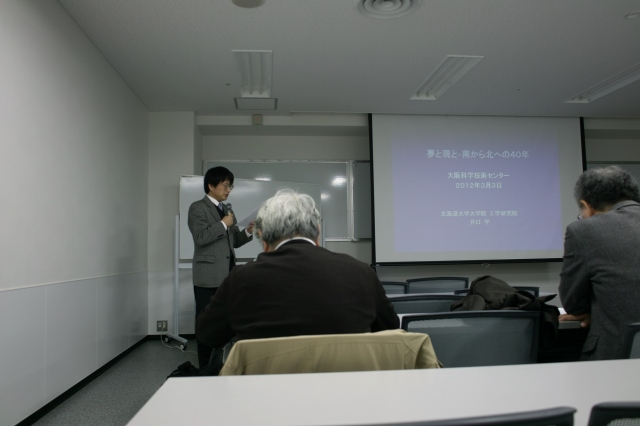
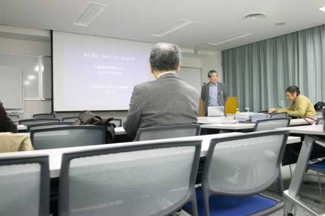
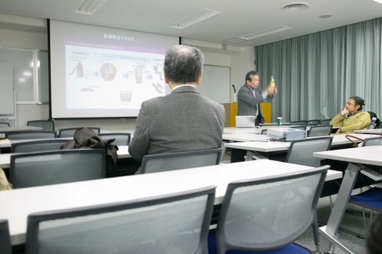
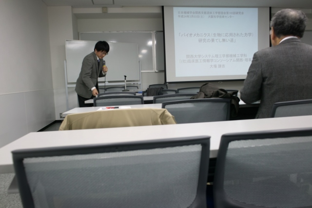
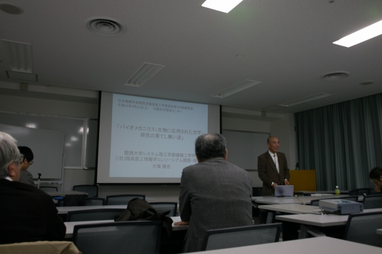
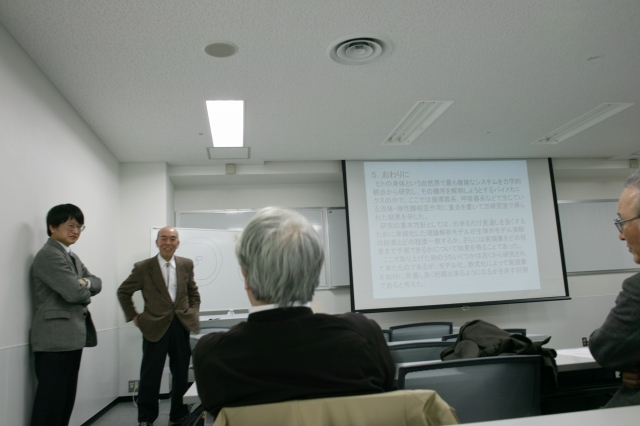
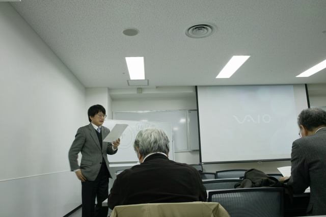

| ・ 流体工学懇話会第165回研究会＠大阪科学技術センター (H24.03.03) | |||
村田先生（代表）と助教の人（幹事）で、流体工学懇話会の第165回研究会を開催しました。去年の秋季技術交流フォーラムと話題は異なり、今回は2名の退職される先生によるご講演です。ベテランの両先生によるプレゼンは、非常に示唆に富んで飽きませんでした。次回は第2専門部会と共同で、関西支部定時総会の講演会をお世話します。懇話会って、前身の会の発足が1960年なので、50年以上続いているんですね。 |
|||
|

靫（うつぼ）公園の所といえば、大阪科学技術センター |

K城くん受付お手伝い中 | ||
|

先生と学生で25人参加でした |

村田先生のご挨拶 | ||
|

井口 学 先生「夢と現と-南から北への４０年-」 |

身振り手振りで学生さんに説明 | ||
|

しばし休憩後、再開です |

大場 謙吉 先生「バイオメカニクス（生物に応用された力学）研究の果てし無い道」 | ||
|

熱い議論中 |

それでは定時総会でお会いしましょう | ||